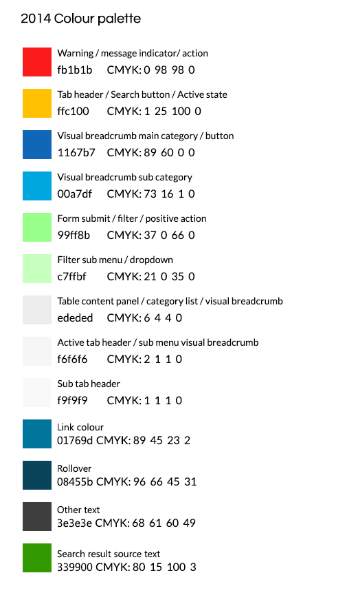

Style guide 2014
Master logo

Download the logo in PDF format
Download the logo in Adobe Illustrator format
Download the logo in Adobe Photoshop format
Download the logo as a PNG
{kind=link}
Master logo - spacing requirements
The NICE logo has specific spacing and an exclusion zone that must be adhered to in any usage.
The requirements are highlighted below and all Master copies of the logos have been set to include the exclusion zone for ease of use.
The example below illustrates that any dimension X=half cap height of the font.

Master logo - what to avoid

Master logo - colour variations - only use black or white

Master logo - short version

Short logo - colour variations - only use black or white

Short logo - spacing requirements
The NICE short logo has specific spacing and an exclusion zone that must be adhered to in any usage.
The requirements are highlighted below and all Master copies of the logos have been set to include the exclusion zone for ease of use.
The example below illustrates that any dimension X=half cap height of the font.

Font
The font used is Lato, available free from Google:
Colours
Please use a calibrated monitor.

Stationary
NICE Letterhead - Manchester
NICE Letterhead - London
NICE DL Envelope
NICE C5 Envelope
NICE C4 Envelope
NICE Compliment Slip
Powerpoint template
1024x768 slide ready for your text
Business card
Simply email the details to the design team who will create it. Or, If you prefer, contact the design team for the template. You will need Adobe InDesign to edit it.
Language and tone
Abbreviations and glossary
The guidelines manual
Questions?
Please email the design team and we will do our best to help.
Simply email the details to the design team who will create it. Or, If you prefer, contact the design team for the template. You will need Adobe InDesign to edit it.
Language and tone